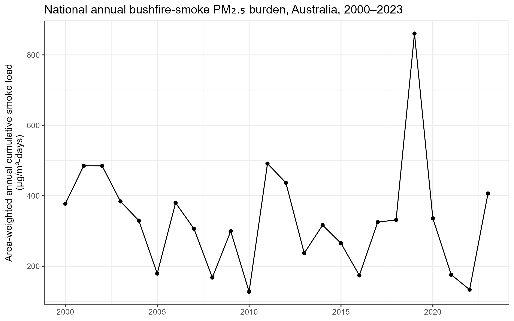
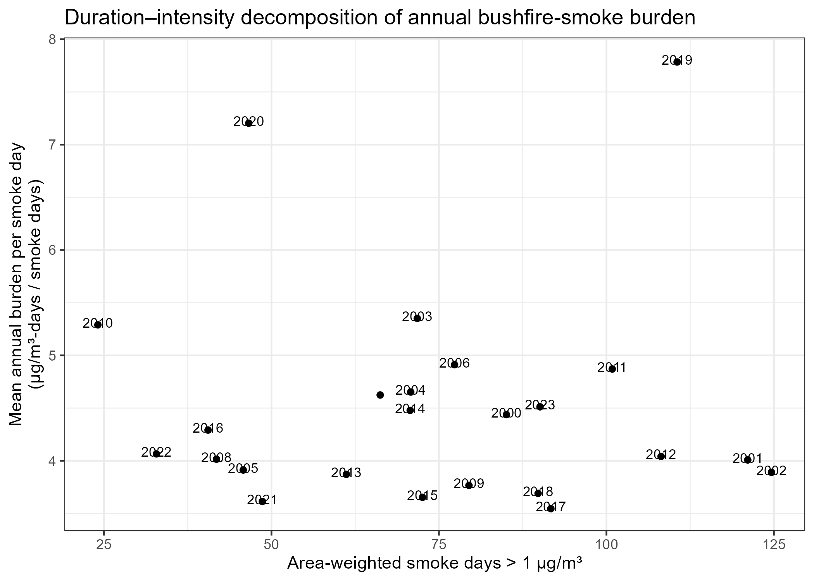
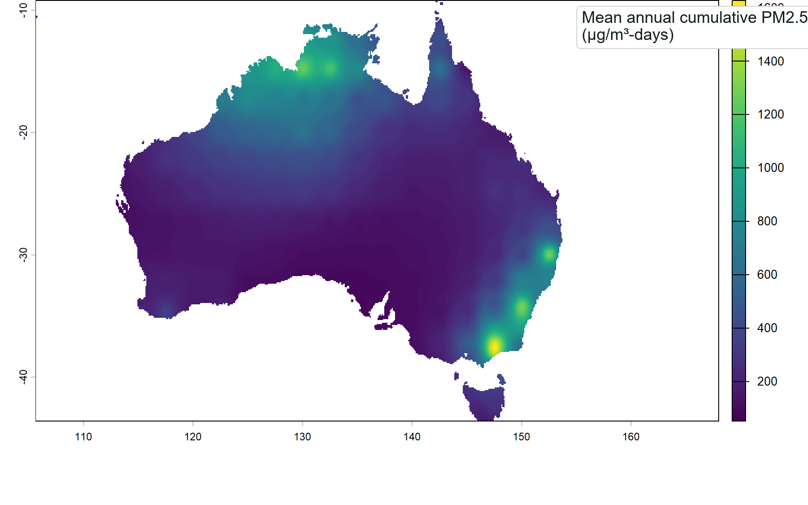
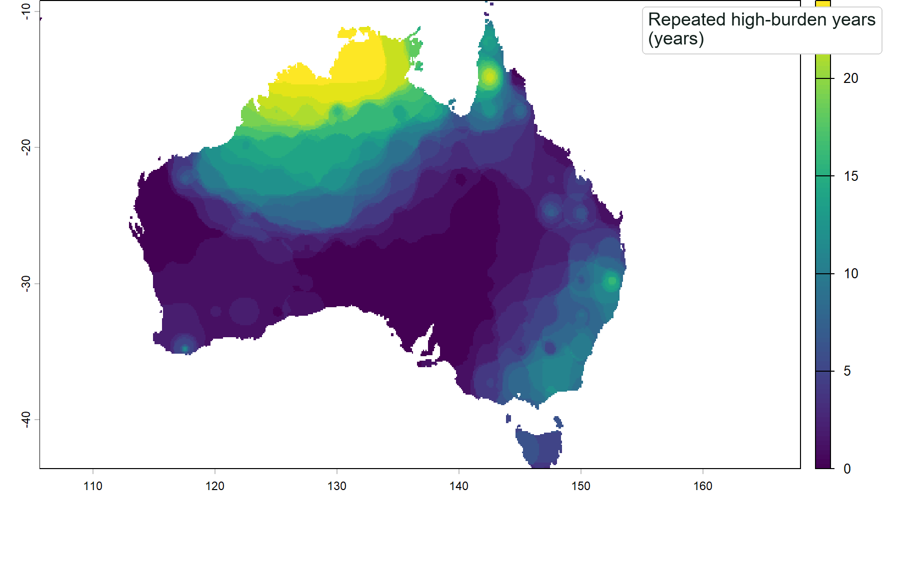
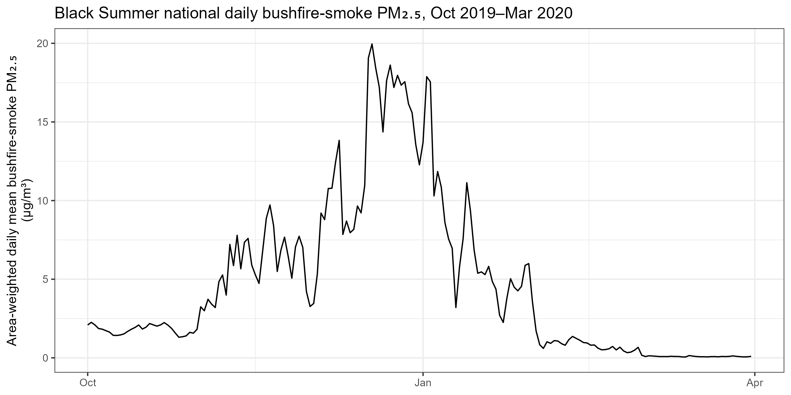
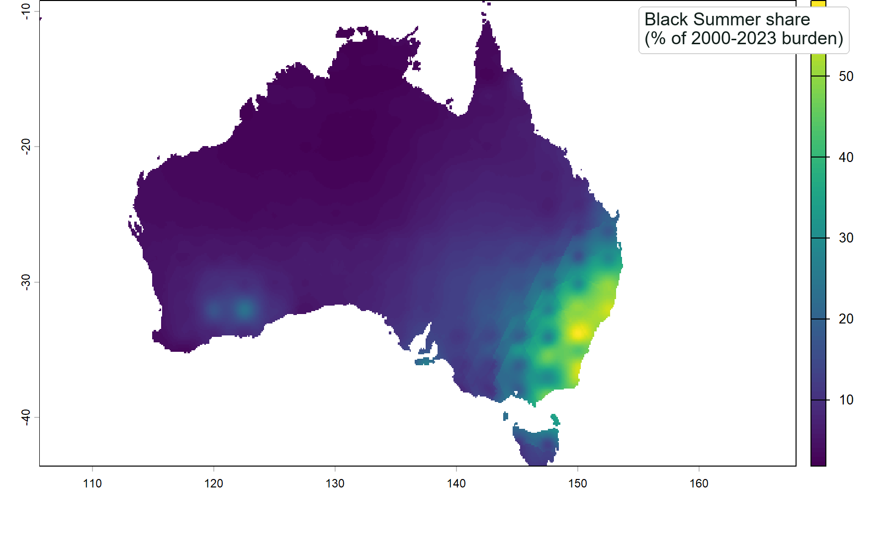
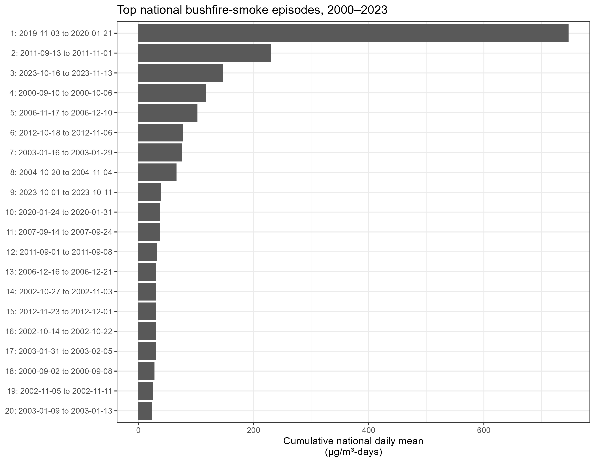

Modern Reference Period, 2000-2023
CARE modern reference-period smoke-burden evidence package
This phase characterises the modern reference period using the existing CARE daily bushfire-smoke PM2.5 product for Australia at 0.1-degree resolution. It provides the benchmark exposure surface for metric derivation, event diagnostics, model testing, and historical extension.
Interpretation rule
These outputs describe the modern CARE reference product. They should not be interpreted as results from the historical reconstruction model. The next stages will integrate historical predictors, develop the reconstruction workflow, and quantify period-specific uncertainty.
Metrics Derived
What this evidence package summarises
How has national smoke burden varied over time?

National summaries are area-weighted using cosine-of-latitude weights. This is a modern reference-period analysis, not a historical reconstruction output.
Are high-burden years driven by duration or intensity?

The scatter uses smoke days above 1 µg/m³ and mean annual burden per smoke day. It is intended to separate frequency from intensity, not to validate a reconstruction model.
Where is modern-period smoke burden concentrated?


Maps are shown as selected static PNG figures for v0.2.0. Full-resolution raster outputs are not published in this public repository.
How did Black Summer shape the modern record?


Black Summer metrics describe an event within the modern reference product; they do not imply that historical reconstruction is complete.
Which national smoke episodes dominate the record?

Episode rankings use national summary metrics prepared for public-facing interpretation. Detailed event rasters remain internal.
Methods and Limitations
What readers should and should not infer
- National summaries are area-weighted using cosine-of-latitude weights to account for unequal grid-cell areas in the 0.1-degree latitude-longitude grid.
- Grid-level maps are reported directly at the native grid-cell resolution in the source analysis, with selected PNG figures used here for public communication.
- This page does not publish raw NetCDF files, full-resolution raster outputs, internal paths, or unrestricted intermediate files.
- No claims are made here about historical reconstruction completion, model validation, or model performance.